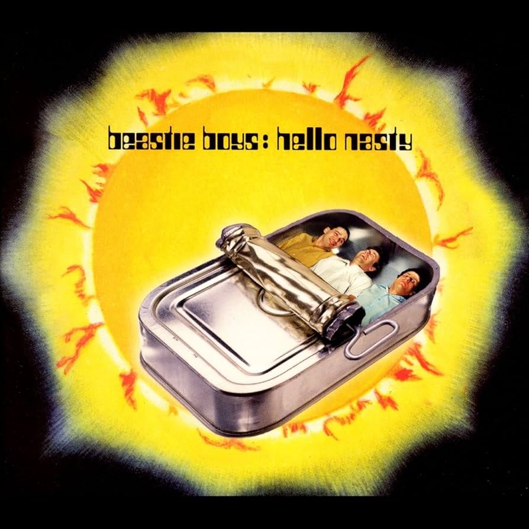

La balis img
La balise img est utilisée pour afficher des images

Il est important, quand l'image illustre du contenu, de remplir l'attribut alt, cet attribut doit servir à décrire l'image affichée.
Cette description sert tout d'abord à l'accessibilité et aussi au référencement.
Le nom de fichier de l'image est aussi utilisé pour le référencement.
Pour éviter que le chargement d'images trop lourdes pénalise le chargement du reste du contenu, il faut mettre l'attribut "loading" de l'image à la valeur "lazy".
Ainsi, lorsque le navigateur doit afficher l'image, il lance le chargement en parallèle du reste du contenu de la page.
Les vignettes
On a parfois besoin de normer les images affichées, c'est à dire une hauteur et une largeur définie, quel que soit le format (carré, portrait ou paysage) de l'image.
La propriété object-fit:cover;

La propriété object-fit:contain;